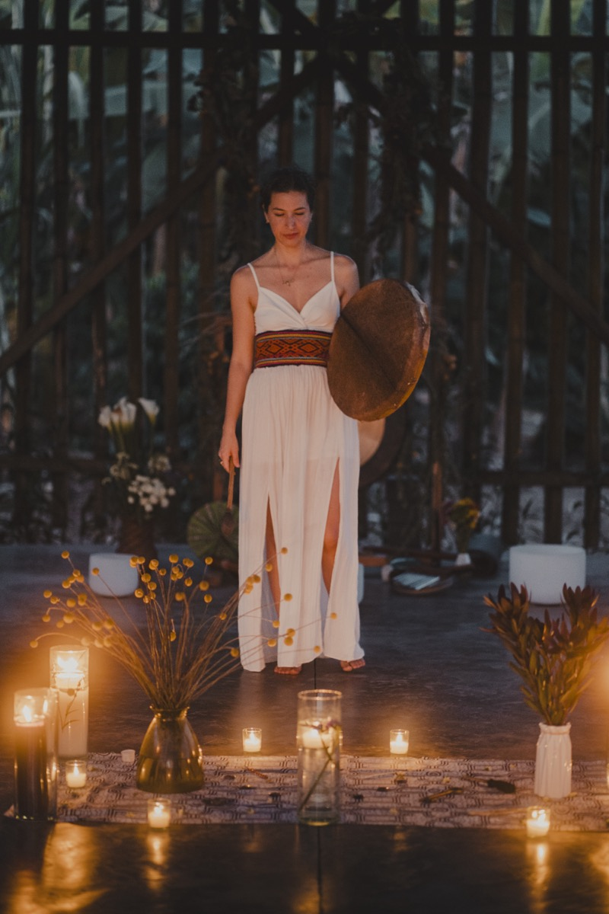
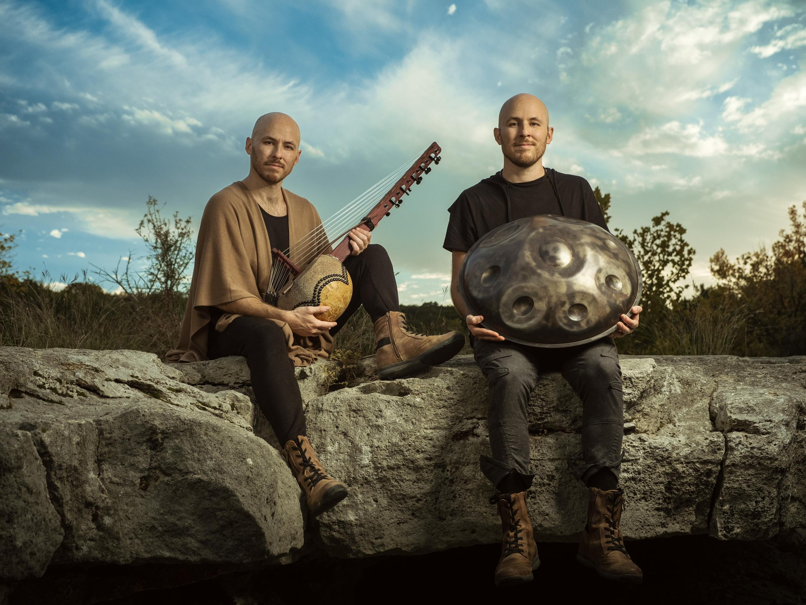
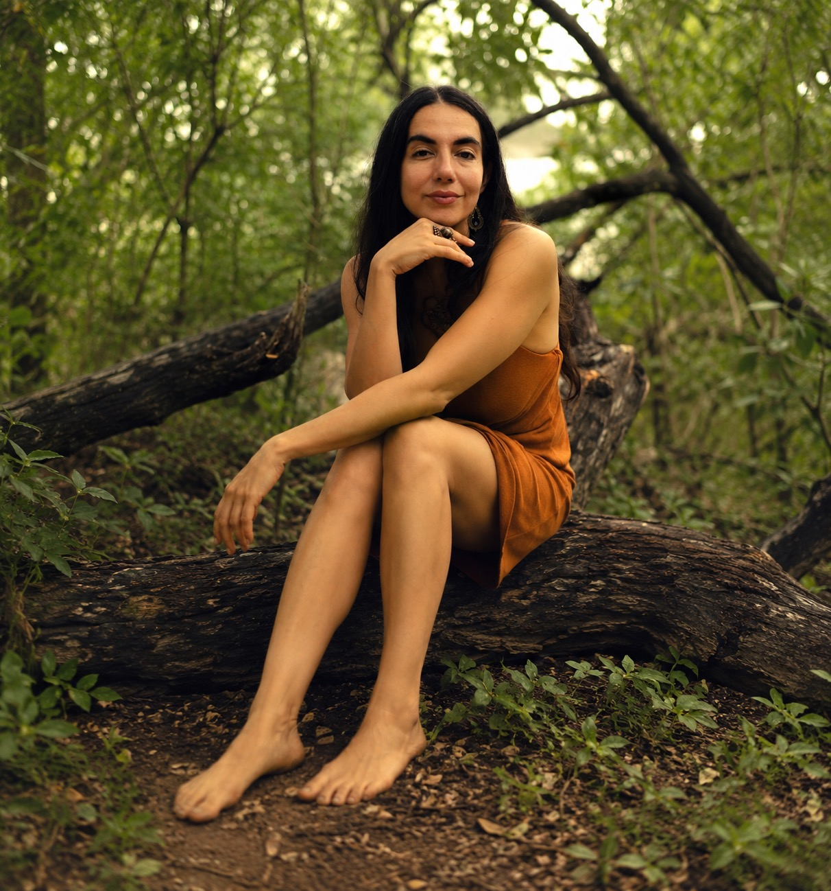
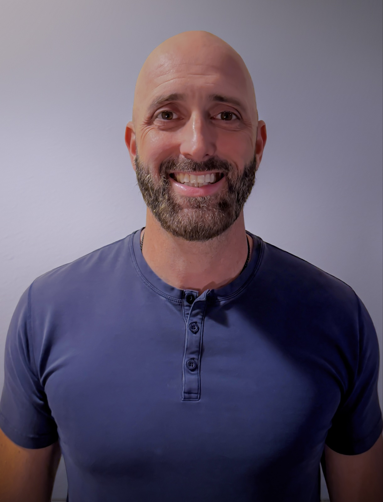
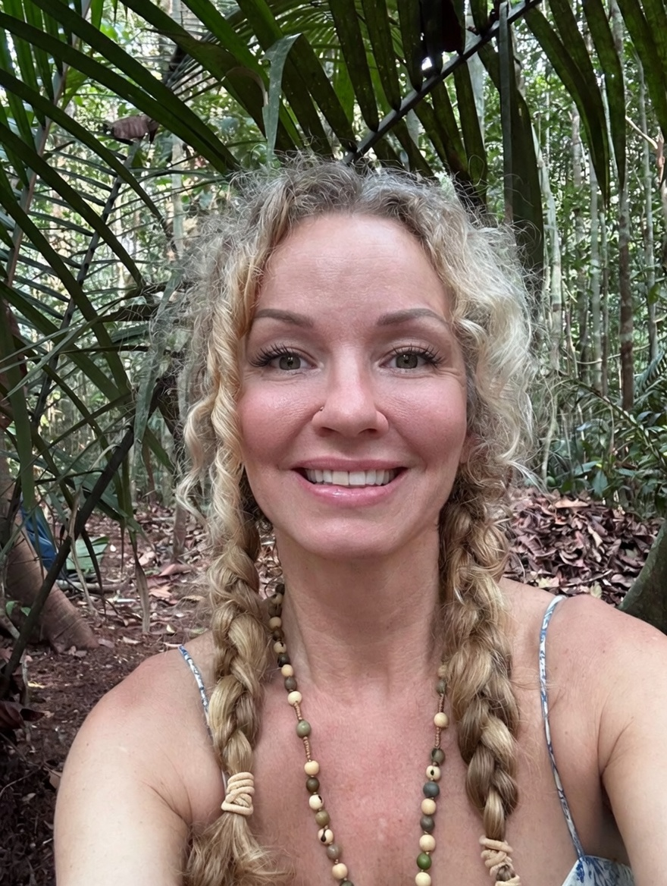
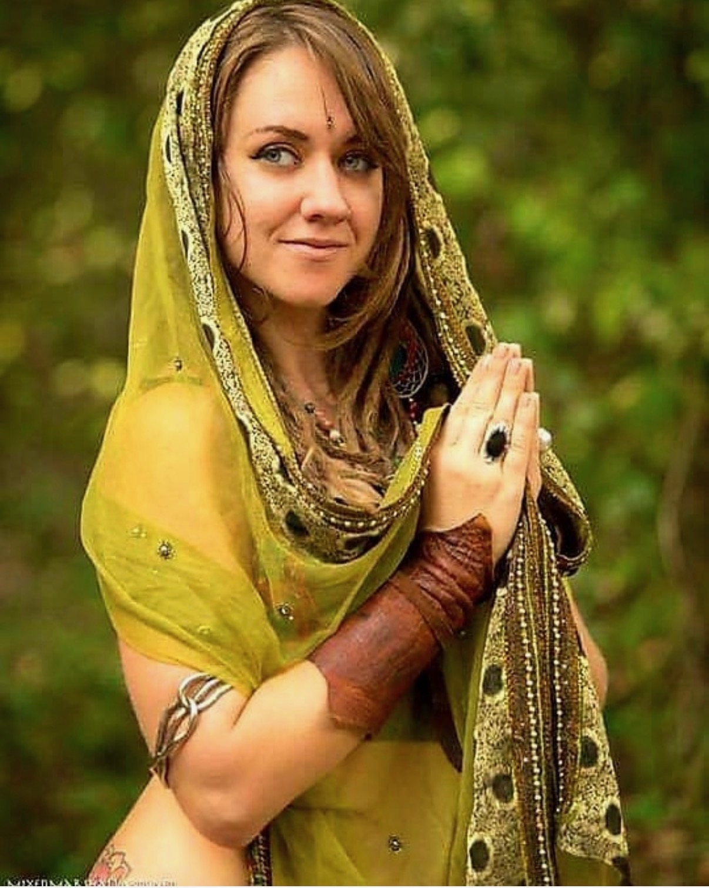
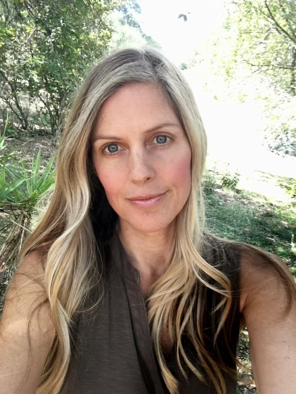
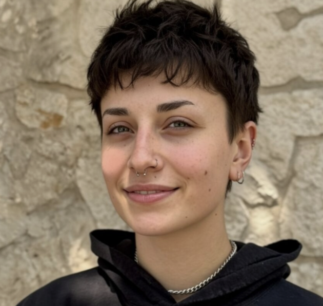
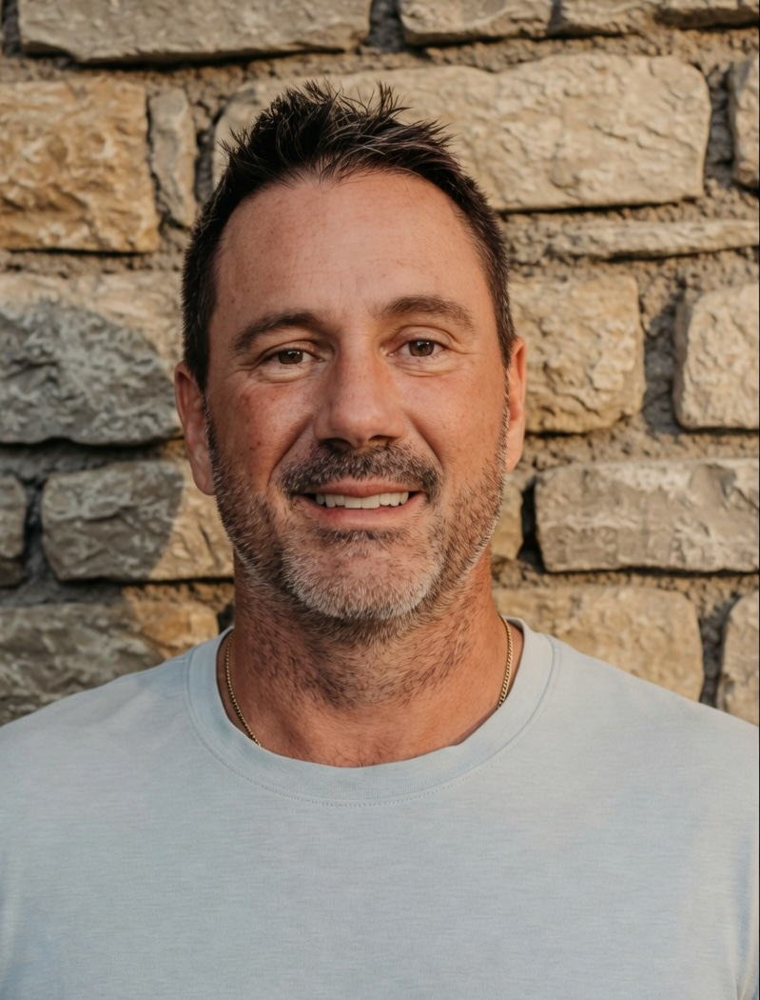

Name
Role
Bio text.
Held by trained founders, facilitators, and sacred space holders — each chosen for their presence, their practice, and the care they bring to every person in the room.








